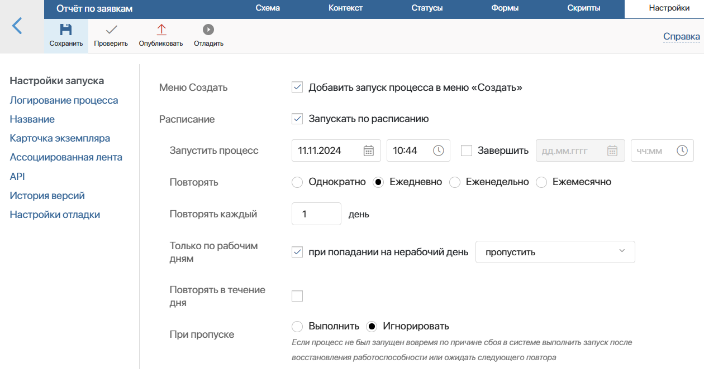
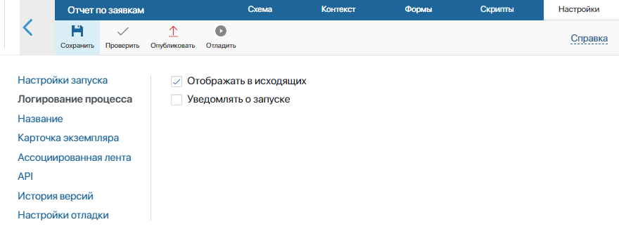
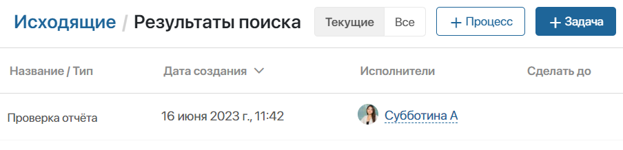
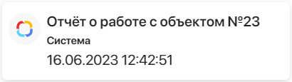
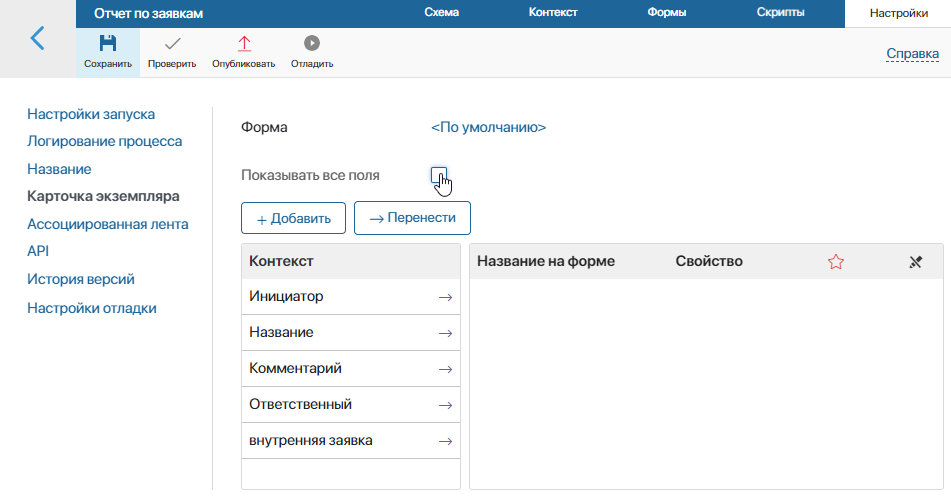
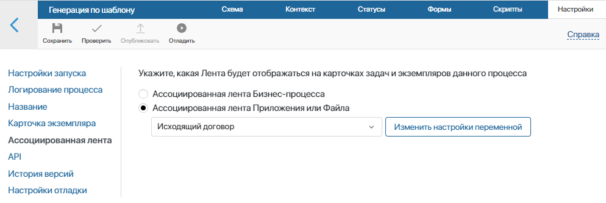
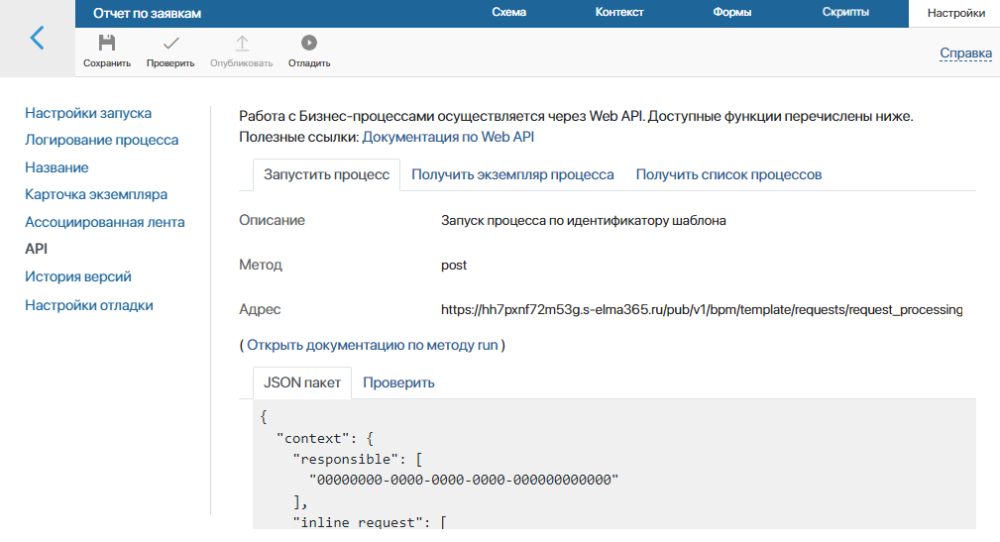
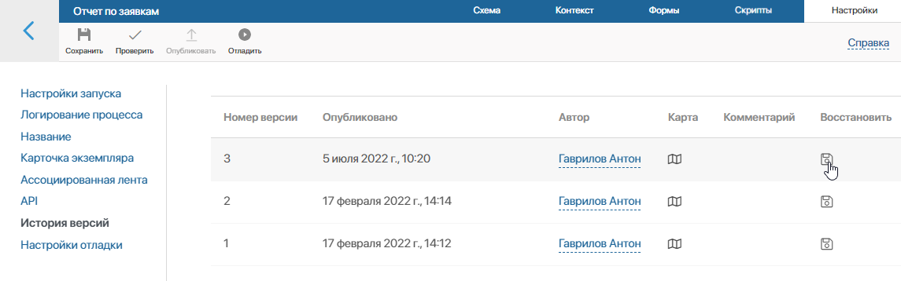
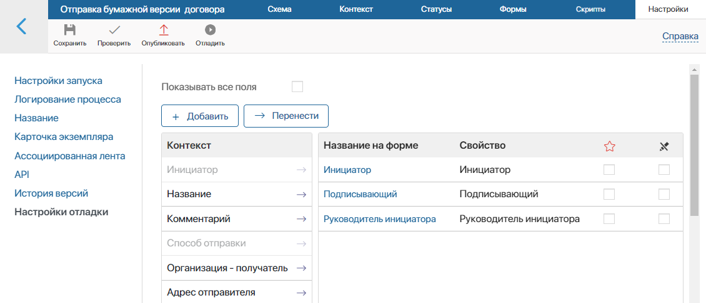

Здесь вы можете:
- запланировать автоматический запуск процесса по таймеру;
- добавить шаблон наименования;
- отредактировать форму карточки экземпляра;
- выбрать ленту, которая будет отображаться в карточке задачи и экземпляра процесса;
- проверить корректность API;
- восстановить предыдущую версию процесса;
- задать форму запуска отладки процесса.
Настройки запуска
Вы можете определить, каким образом будет запускаться процесс.
- Меню Создать — опция добавляет процесс в контекстное меню кнопки Создать. Нажав название процесса, пользователь может запустить его. По умолчанию кнопка располагается на главной странице системы, но её также можно добавить на формы и страницы. Подробнее об этом читайте в статье «Кнопка Создать»;
- Расписание — вы можете задать расписание для автоматического запуска процесса по определённым дням, неделям или месяцам. При этом можно включить определение времени с учётом текущего рабочего календаря. Настройка осуществляется так же, как при работе со стартовым событием.

Логирование процесса

При выборе опции Отображать в исходящих все запущенные экземпляры процесса будут отображаться в системном разделе Задачи на странице Исходящие. Нажав на название экземпляра, вы сможете просмотреть подробную информацию о нём: историю процесса, его контекст и карту. Подробнее об этом читайте в статье «Экземпляр процесса».

При выборе опции Уведомлять о запуске, вы будете видеть всплывающее оповещение каждый раз, когда запускаете процесс. Также уведомление о запуске отобразится в вашей #ленте. По умолчанию это опция включена.

Название

На этой вкладке, как и в настройках Стартового события, вы можете добавить шаблон названия для экземпляра процесса. При запуске вам не придётся каждый раз вводить название вручную.
В поле Шаблон введите название для экземпляра процесса. Также вы можете добавить в шаблон контекстную переменную, например, ФИО инициатора. Список доступных переменных открывается при нажатии на значок {+} в правом углу поля.
С помощью значка f(x) вы можете добавить в шаблон условия и функции. Это позволит сгенерировать более информативное название.
Если шаблон наименования был задан в настройках стартового события, он будет отображён в этом разделе.
Карточка экземпляра

В этом разделе вы можете изменить внешний вид карточки экземпляра процесса. По умолчанию в карточке отображаются все контекстные переменные процесса. Чтобы скрыть определённые переменные, выключите опцию Показывать все поля. Затем перетащите переменные, которые вы хотите видеть в карточке, из колонки Контекст в колонку Название на форме.
При необходимости вы можете настроить свою форму карточки, добавить или удалить вкладки, изменить расположение полей, содержание боковой панели. Для этого воспользуйтесь редактором форм. Нажмите на ссылку <По умолчанию>, а затем нажмите + Создать шаблон. Подробнее о работе с шаблонами читайте в статье «Вкладка „Формы“».
Посмотреть карточку экземпляра можно в разделе Задачи > Исходящие.
Ассоциированная лента

Выберите ленту, которая отобразится в карточках задач и экземпляра процесса:
- Ассоциированная лента Бизнес-процесса — сообщение, отправленное в ленту задачи, отобразится в карточке экземпляра процесса;
- Ассоциированная лента Приложения или Файла — в появившемся ниже поле выберите переменную типа Приложение или Файл. Тогда в карточках задач и экземпляра процесса отобразится лента элемента приложения или лента файла, значение которого хранит выбранная переменная. Так, если выбрана переменная типа Приложение, и в ходе процесса в задаче отправлено сообщение, вы увидите его в карточке элемента этого приложения. Если переменная пустая, сообщение отобразится только в ленте экземпляра процесса.
|
API

На этой вкладке описывается весь доступный API, приводится его описание, указан метод и адрес.
- Описание — информация о назначении API;
- Метод — тип HTTP-запроса, указывающий серверу на то, какое действие вы хотите выполнить;
- Адрес — адрес запроса;
- JSON пакет — текст запроса;
- Проверить — на этой вкладке вы можете проверить, корректно ли составлен ваш запрос.
При помощи API вы можете интегрировать ELMA365 c вашими системами. Например, после того как клиент оформит заказ на вашем сайте, можно автоматически запустить процесс обработки заявки.
История версий
После того как в бизнес-процесс внесены изменения, его необходимо опубликовать, чтобы при запуске его экземпляра выполнялась новая версия. Все опубликованные версии процесса будут отображаться на вкладке История версий с указанием автора, времени и комментария, оставленного при публикации. Нажав на значок  , можно посмотреть карту версии процесса. Вы также можете восстановить предыдущую версию процесса. Для этого выберите название в списке, нажмите на значок дискеты и подтвердите действие.
, можно посмотреть карту версии процесса. Вы также можете восстановить предыдущую версию процесса. Для этого выберите название в списке, нажмите на значок дискеты и подтвердите действие.

Настройки выбранной версии применятся к текущему черновику процесса, открытому на вкладке Схема. Все сохранённые, но не опубликованные изменения будут утеряны.
Вы можете отредактировать восстановленную схему процесса, изменить расположение элементов или формы задач. Чтобы применить новую версию, повторно нажмите кнопки Сохранить и Опубликовать на верхней панели дизайнера.
Обратите внимание, все экземпляры процесса, запущенные до публикации новой версии, завершатся без учёта внесённых изменений. Подробнее об этом читайте в статье «Публикация бизнес-процесса».
Настройки отладки

Вы можете настроить внешний вид окна запуска отладки процесса, чтобы заполнить в нём контекстные переменные процесса. Для этого перетащите нужные полях из колонки Контекст в колонку Название на форме. Это позволит не заполнять поля в стартовом событии и последующих задачах процесса в ходе его отладки. Если вы хотите отобразить на форме весь контекст процесса, включите опцию Показывать все поля.